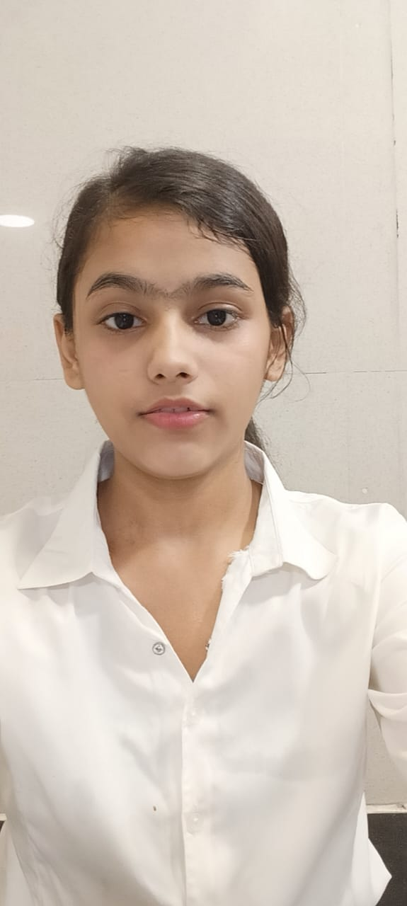

AAYUSHI CHAURSIYA

Summary
A motivated and aspiring IT professional currently pursuing a BSc in Information Technology.
Passionate about web development and keen to build a strong foundation in front-end and back-end technologies.
Seeking opportunities to apply my skills and grow as an independent woman in the tech industry.
Education
- Hindi Vidya Prachar Samiti's RAMNIRANJAN JHUNJHUNWALA COLLEGE OF ARTS,
SCIENCE & COMMERCE (EMPOWERED AUTONOMOUS)
- Bachelor of Science|Information Technology
- Academic Qualification:
HSC-86.83%
NES Jr. CollegeSSC-79.80%
Guru Nanak Eng High School
Work Experience
- Personal Web Development Projects:
- Created and designed basic web pages using HTML and CSS.
- Currently developing an interactive resume using JavaScript.
Skills
- Web Development: Basic knowledge of HTML, CSS, and JavaScript.
- Programming: Familiar with C programming basics as well as Sql.
- Soft Skills: Strong problem-solving abilities, eager to learn, and highly motivated.
- Future Skills in Progress: Learning advanced web development, including forms, responsive design,
and JavaScript interactivity.
Hobbies:
•singing
• reading
• Writing
• Dance
Personal Details:
DOB: 14 october 2006
Nationality: Indian
Gender: female
Blood Group: o+
Languages Known: English, Hindi, Marathi, Bhojpuri.
Address: R.no.2/2,subash nagar,nahur, Bhandup-West, Mumbai-400078.